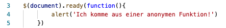
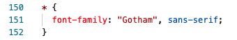
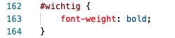
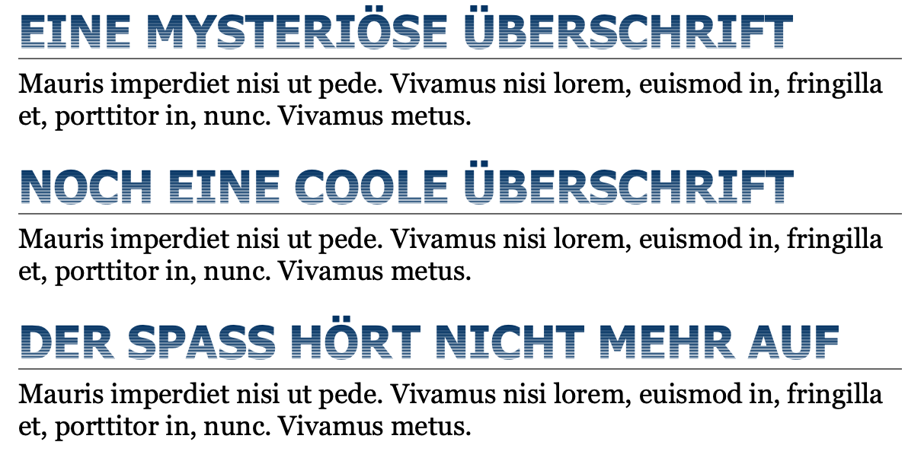

In Vorlesung 2 haben wir bereits die Grundzuüge des DOMs besprochen. Nun beschäftigen wir uns weiter mit der Manipulation von Objekten mittels JavaScript. Um ein Objekt manipulieren zu können muss dieses erstmal erkannt werden. Daraufhin muss festgelegt werden, was mit dem Objekt geschehen soll. DOM ist dabei eine Art Verbindung zwischen JavaScript und HTML, die es JavaScript ermöglicht HTML-Elemente zu finden. Wie in Vorlesung 2 erklärt, kann ein Element dabei durch die Funktion getElementById() gefunden werden. Daraufhin kann das Objekt manipuliert werden, zum Beispiel können Eigenschaften eines Elementes verändert werden.
Währen meiner ersten Praxisphase drufte ich eine App für Demezkranke innerhalb meines Unternehmens programmieren. Dabei machte ich häufig von der Funktion getElementById() gebrauch. Dabei spielen auch Events eine Rolle. Die App zielt darauf ab Menschen durch Bilder "verlorene" Wörter neu beizubringen. Dabei wird das identische Layout verwendet, um die verschiedenen Bilder einzublenden. Somit soll nur das Bild geupdatet werden. Die Javascript-Funktion getElementById() wurde dabei verwendet um die HTML-Elemente "Weiter-Button" und "Bild" zu finden. Nur so ist es dann möglich durch das Klicken auf den "Weiter-Button" das Element "Bild" zu aktualisieren / manipulieren und ein neues Bild anzeigen zu lassen.
Programmierer möchten so wenig neuen Code wie möglich schreiben. Vorallem wenn es um immer wiederkehrend benötigte Funktionen gibt, ist es lästig den selben Code immer und immer wieder schreiben zu müssen. Heutzutage gibt es für dieses Problem verschiedene Lösungen: Zum Beispiel Libraries, APIs und Frameworks. Im folgenden werden diese drei Begriffe differenztiert, um unter anderem das Verständnis für jQuery zu schärfen:
Eine Library, in deutsch Bibliothek, ist eine Sammlung von Funktionen und Klassen.
Eine API (application programming interface) hingegen ist eine Schnittstelle, die den Zugriff auf die Funktionen ermöglicht.
Ein Framework ist eine spezielle Form einer Bibliothek, die sich heute etabliert und durchgesetzt hat. Ein Framework ist dabei kein fertiges Programm, sondern muss an vorgesehenen Stellen ergänzt werden. Es bildet somit den Rahmen der dann mit individuellem Code gefüllt werden kann.
Eine Library stellt Funktionen bereit, die man dann innerhalb seines Codes aufrufen kann. Eine Funktion einer Bibliothek ist also eine Art Werkzeug, das man kontrollieren kann. Frameworks hingegen ordnet man sich selbst unter und somit gibt das Framework eine Struktur vor. Eine Library kann man also bei Bedarf nutzen, hingegen ist das Framework das eigentliche Hauptprogramm, das Teile des eigenen Codes aufruft.
Das jQuery Framework unterstützt vorallem CSS-Selektoren und AJAX (folgt in Kapitel 8). Der Vorteil gegenüber herkömmlichen JavaScript-Code ist, dass der Code durch jQuery oft deutlich kürzer ist. Ebenfalls ist jQuery sehr gut geeignet für das Gestalten interaktiver Benutzeroberflächen. Die Vorteile von jQuery sind dabei, dass die Dateigrößen sehr klein sind. Zudem baut jQuery auf CSS Wissen auf, was uns vorallem während dieser Vorlesung zu Gute kam, und ermöglicht das verwenden von PlugIns.
Zu Beginn des Codes steht in Häufigkeit die folgende Funktion: $(document).ready(). Somit wird darauf gewartet bis die Seite vollständig geladen ist und erst daraufhin beginnt die Ausführung des Codes. Als Parameter können wir der Funktion dann eine anonyme Funktion mitgeben. Dies sieht wie folgt aus:

JQuery verfügt über drei verschiedene Gruppen von jQuery-Methoden:
Die Gruppe gibt ein jQuery-Objekt zurück, das der Eingabe-Collection entspricht (Collection unverändert). Dazu kann man Elemente der Collection verändern. Außerdem sind die Methoden ohne Einschränkungen verkettbar.
Diese Gruppe gibt ein jQuery-Objekt zurück, das nicht der Eingabe-Collection entspricht. Stattdessen geben diese Methoden eine reduzierte, erweiterte, oder ganz andere Collection zurück. Diese Methoden sind ebenfalls ohne Einschränkungen verkettbar.
Terminierende jQuery-Methoden geben kein jQuery-Objekt zurück, sondern etwas anderes, wie zum Beispiel DOM-Konten, Strings oder andere Datentypen. Diese Methoden sind nicht verkettbar.
Das besondere an jQuery ist, dass man ähnlich wie mit den CSS-Selektoren arbeiten kann. Ergebnisse werden in einem speziellen jQuery-Objekt gespeichert, das so ähnlich wie ein JavaScript- Array funktioniert. Wie in CSS können somit Elemente (mit dem Namen des Elementes), Klassen (mit Punkt) und IDs (mit #) ausgewählt werden. Als Rückgabe erhält man dann ein jQuery-Objekt, das alle gefundenen Elemente enthält.
JQuery Filter sind vergleichbar mit CSS-Selektoren. Mittels diesen Filter kann ein bestimmer "Bereich" oder Klasse ausgewählt werden. Die Filter-Funktion erstellt dabei ein neus Array, das mit den Ergebnissen der Filtersuche, gefüllt wird. Die Syntax lautet dabei wie folgt:
Das Stück :filter wird dabei durch eins der folgenden ersetzt:
Ein CSS Selektor identifiziert HTML-Elemete durch Suchmuster. Dadurch ist es möglich Elementen, die in einem Suchmuster liegen, gemeinsame Eigenschaften mitzugeben. CSS verfügt über sehr viele Selektoren, die je nach Anwedungsfall genutzt werden. Im folgenden sind die einfachen Selektoren gelistet:
Hierbei konzentrieren wir uns auf die ersten beiden Punkte: Universalselektoren und ID-Selektoren.
Der Universalselektor wird mit * aufgerufen und bezeiht sicht auf alle Elemente des Elementebaumes. Das folgende Beispiel verdeutlicht den Einsatz:

Das Beispiel zeigt somit, dass alle Elemente in der Schriftart Gotham (sans-serif) dargestellt werden.
Mit dem ID-Selektor werden Elemente durch das Suchmuster einer bestimmten ID angesprochen:

Hierbei ist zu sehen, dass das Element / die Elemente der ID wichtig durch den Selektor fett gedruckt geschrieben werden.
Die Übung kreative Überschriften zeigt, wie mit Hilfe von jQuery und CSS Überschriften verbessert werden können.
